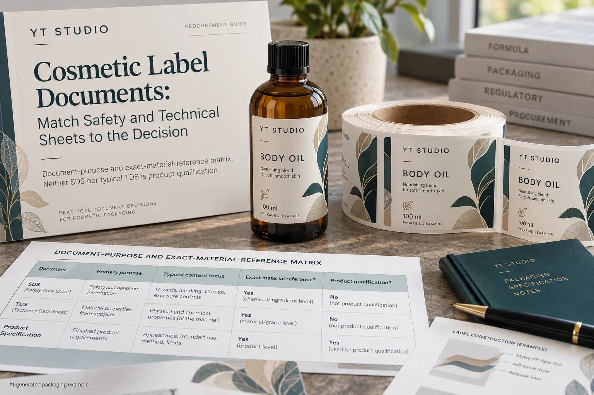
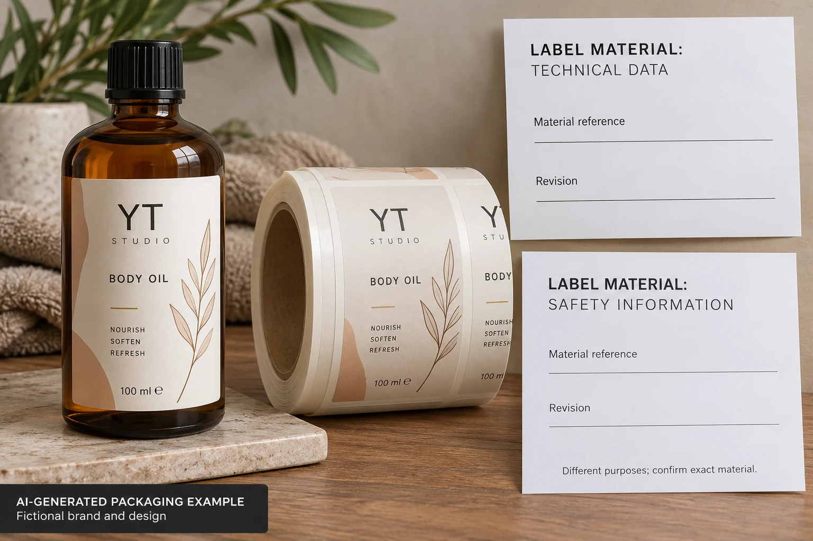

A body-oil label proposal arrives with an adhesive safety sheet. The buyer files it under material approved. Later, the quality team asks which document supports the intended surface, printing and exposure. The folder contains a document, but not necessarily an answer to that question.
Match each material document to the decision it can support and to the exact product reference it describes. A safety sheet, technical data sheet and job-specific sample record are different evidence. Receiving one does not make the others unnecessary.

Begin with the decision that needs evidence
Write the unresolved question in plain language. Are you identifying a proposed construction, reviewing a handling requirement, comparing a measured property or asking whether the assembled label suits product-drip exposure? These are different requests even when they concern the same adhesive.
Do not request a certificate merely because an internal checklist has a blank box. Ask which defined claim or assessment the document must support. A supplier can respond more usefully to a named requirement than to a request for every possible material paper.
This guide is a purchasing-document workflow. It does not determine which safety documents the law requires for your product or location. The responsible safety or regulatory function should identify any such requirement and the appropriate format.
Check product identity before reading the reassuring language
Record the supplier's product identifier, document title, revision date, region or language where relevant, and the part of the label construction it covers. A sheet for a similarly named adhesive may not identify the supplied film-and-adhesive combination.
3M's regulatory document search distinguishes multiple document types, supports searching by product identification and notes country-format limitations for its safety sheets. The limited lesson is to request the right document for the actual reference and context. It is not evidence that any YT Labels construction uses a 3M product.
Ask the converter to connect the raw-material reference to the finished printed label it proposes. If a document covers only the adhesive, retain that boundary. Printing, coatings, protective finish and application history may still need their own evidence.
Use a document-purpose matrix
| Evidence | Useful question | Boundary |
|---|---|---|
| Supplier construction reference | Which face, adhesive, liner and relevant finish are proposed? | Identification alone is not application approval |
| Technical information | Which stated property, method and condition apply to that reference? | A typical value may not be a guaranteed job acceptance limit |
| Safety information | What identified safety or handling question does it address? | It does not automatically demonstrate wet-use, adhesion or print performance |
| Claim-specific evidence | What exact claim, supplied component and scope are covered? | A general corporate statement may not cover this finished label |
| Project assessment | Which actual container, construction and use were reviewed? | Its conclusion should not extend to unexamined changes |
First list the project's unresolved requirements. Map each requirement to a proposed evidence type and owner. Then review the received reference, scope and conditions. Mark what the document supports, what it does not address and who will supply the missing information.
If technical data gives a value, retain its units, method, specimen and conditions. Do not compare values merely because both rows say adhesion. Our tack-versus-peel guide explains why different measurements should remain distinct.

Separate a typical property from a purchase requirement
Read whether the supplier presents a value as typical information, a defined specification or something else. Ask the supplier to explain unclear wording rather than upgrading it in your own purchasing spreadsheet. Keep the original document and any written clarification linked.
If the job needs a particular acceptance criterion, have the relevant parties agree whether and how it will be supported. A document describing a material family is not automatically a contractual commitment for a finished printed order. This article does not create such a commitment on the supplier's behalf.
The complete-construction material guide addresses actual exposure and sample scope. A safety document cannot replace that use-specific discussion, just as a successful applied sample does not replace an independently required handling document.
Two purchases can reasonably request different evidence
A hypothetical unchanged repeat needs a traceable current construction reference and confirmation that no relevant component or document has changed. The buyer may be able to rely on identified existing project evidence within its original scope.
A new coated bottle, different protective finish or newly requested claim reopens another question. Its buyer has a reason to request additional evidence tied to that change. Reusing the same folder name does not make the new requirement covered.
Neither case justifies collecting confidential composition information without a defined need. Ask the supplier what relevant documentation it can provide, and route restricted or specialized questions through the appropriate technical contact. More pages are not automatically a better evidence package.
Keep an unresolved item visible in the release
Hold the affected requirement if the document reference does not match, the relevant conditions are missing, the proposed construction is unidentified or the evidence does not support the requested claim. Record the missing item rather than marking the whole material approved because one sheet arrived.
For custom cosmetic labels, provide the container, dimensions, quantity per design, intended exposure, proposed construction references and the specific documentation question. Ask which information can be supplied and what requires project-specific assessment.
The inquiry form prepares a draft message. Send documents and artwork by email or WhatsApp; the form does not upload attachments. Keep the supplier's response beside the requirement it actually answers.